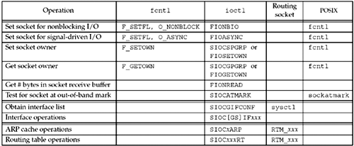

| [ Team LiB ] |
|
7.11 fcntl Functionfcntl stands for "file control" and this function performs various descriptor control operations. Before describing the function and how it affects a socket, we need to look at the bigger picture. Figure 7.20 summarizes the different operations performed by fcntl, ioctl, and routing sockets. Figure 7.20. Summary of fcntl, ioctl, and routing socket operations. The first six operations can be applied to sockets by any process; the second two (interface operations) are less common, but are still general-purpose; and the last two (ARP and routing table) are issued by administrative programs such as ifconfig and route. We will talk more about the various ioctl operations in Chapter 17 and routing sockets in Chapter 18. There are multiple ways to perform the first four operations, but we note in the final column that POSIX specifies that fcntl is the preferred way. We also note that POSIX provides the sockatmark function (Section 24.3) as the preferred way to test for the out-of-band mark. The remaining operations, with a blank final column, have not been standardized by POSIX.
The fcntl function provides the following features related to network programming:
Each descriptor (including a socket) has a set of file flags that is fetched with the F_GETFL command and set with the F_SETFL command. The two flags that affect a socket are
We will describe both of these features in more detail later. For now, we note that typical code to enable nonblocking I/O, using fcntl, would be:
int flags;
/* Set a socket as nonblocking */
if ( (flags = fcntl (fd, F_GETFL, 0)) < 0)
err_sys("F_GETFL error");
flags |= O_NONBLOCK;
if (fcntl(fd, F_SETFL, flags) < 0)
err_sys("F_SETFL error");
Beware of code that you may encounter that simply sets the desired flag.
/* Wrong way to set a socket as nonblocking */
if (fcntl(fd, F_SETFL, O_NONBLOCK) < 0)
err_sys("F_SETFL error");
While this sets the nonblocking flag, it also clears all the other file status flags. The only correct way to set one of the file status flags is to fetch the current flags, logically OR in the new flag, and then set the flags. The following code turns off the nonblocking flag, assuming flags was set by the call to fcntl shown above:
flags &= ~O_NONBLOCK;
if (fcntl(fd, F_SETFL, flags) < 0)
err_sys("F_SETFL error");
The two signals SIGIO and SIGURG are different from other signals in that they are generated for a socket only if the socket has been assigned an owner with the F_SETOWN command. The integer arg value for the F_SETOWN command can be either a positive integer, specifying the process ID to receive the signal, or a negative integer whose absolute value is the process group ID to receive the signal. The F_GETOWN command returns the socket owner as the return value from the fcntl function, either the process ID (a positive return value) or the process group ID (a negative value other than –1). The difference between specifying a process or a process group to receive the signal is that the former causes only a single process to receive the signal, while the latter causes all processes in the process group (perhaps more than one) to receive the signal. When a new socket is created by socket, it has no owner. But when a new socket is created from a listening socket, the socket owner is inherited from the listening socket by the connected socket (as are many socket options [pp. 462–463 of TCPv2]). |
| [ Team LiB ] |
|